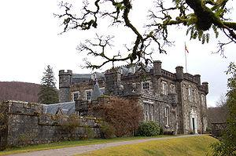

Cumha le Lochial an uair e a chaisteal
air a losgadh leis na Saighdearan-Dearga
Lochiel's lament on seeing his castle burnt by the Red-Coats
Lochiel déplore l'incendie de son manoir par les Habits Rouges
Author unknown
Translated by Mrs Mary MacKellar née Cameron
Source: in "Sar obair nam Bard Gaeleach", 1881Tune
Tune:unknown, replaced here by "Lochiel's March"Kerr -"Merry melodies", vol. P.27 ca 1880 -Source: "Fiddler's Companion" (see links)
Sequenced by Christian Souchon
Sheet music- Partition

|
1. Must I the lord of all those hills,
A weary, exiled wanderer, roam, And quietly view thy ruined walls, My own, my loved ancestral home. 2. The red-coats burned thy lofty dome, Home by a thousand ties made dear, How glad from war or chase I've come, In thee any heart to rest and cheer. 3. When peace did her white banner rear, And loving vassal and his lord Went forth to hunt the roe and deer, And turned to grace the festal board. 4. The blood-red wine in plenty poured, And pibrochs (1) told of battles won, Whilst " Senachies " (2) would with pride record The mighty deeds our sires had done. 5. Till martial fire in sire and son Would burst into one glowing flame, Whilst vows were breathed by every one, He'd ne'er disgrace the Cameron name. 6. When time to raise our banner came, And fiery cross had fleetly sped (3) To call the brave to fields of fame, 'Twas aye to victory we led. 7. The Southern foe (4) our name did dread, Though now Culloden's palm they bear, They in their own pale blood might tread, Had all our gallant clans been there. 8. Come, shade of Bruce, my vigil share, Come o'er ungrateful Scotland, mourn, She hath disowned thy rightful heir! Indignant fire, my heart doth burn. 9. To wear a foreign yoke I'd spurn, Nor 'gainst my lawful king rebel, That crown and sceptre 's from him torn For mercy's cause, they feign to tell. 10. In Dutch (6)or Guelph (5) doth mercy dwell? Ye gallant heroes of Glencoe, (7) Arise in gory shrouds, and tell Your mournful tale of dole and woe! 11. And rise, ye brave, whose blood did flow On dark Culloden's dreary moor, And tell how when ye were laid low, That " Butcher's " (8) hand did stab ye o'er. 12. Oh, hush, ! my heart, and grieve no more,' This is no time to sit and rest, I'll hie me to a foreign shore, And long to get thy wrongs redressed. 13. Sweet home, within thee every breast Did glow with love and purity, And round thy hearth the stranger guest Met kindest hospitality. 14. And though I roam beyond the sea, I'll ne'er forget the golden hours When I had ruled a chieftain free, 'Mong Achnacarry's fairy bowers. 15. 'Tis gore bedews the drooping flowers, That now bedecks each dappled dell Around thy ruined ancient towers, Home of my heart, farewell, farewell ! 16. Luna's lamp lights up the glen, And I must hide from watchful foes, I'll hie to where my prince has lain In " balmy sleep " to drown his woes. (9) |
1. An eiginn dhomhsa, triath nam beann,
'Bhi'm fhogarrach fann air feadh nan stuig 'S gu tosdach sealltainn ort's do chearn, A thalla aosda anns an ùir ! 2. Loisg na Dearganaich gu lar Gach baidheal ard de'n dachaidh ghaoil, 'S an tric a fhuair mi fois 'us biadh, Air tilleadh dhomh bho ar nan laoch. 3. 'N uair 'thogadh sith a bratach suas 'S a bhithinn-sa le m' thuath-cheathairne fhein Tigh'nn luchdaichte gu tur nam biadh Bho'n chreachann fhuar's am biodh na féidh. 4. Bu phailte am fion 's biodh piobair (1) ghleus, 'S i caithreamach mu'r n-euchd 's a'bhlar ; 'S tràth 'bheireadh seanachaidh (2) greis air sgeul, Mu ghniomhannan nan treun athar. 5. Bhiodh cridh' gach cuiridh laist' na 'chom, 'S e ann am fonn gu 'bhi 's an ar ; Gach Camshronach 's a bhoid gu trom Gu 'ainm 'bhi measg nan sonn 's an dan. 6. 'N uair thogainn-sa mo shrbl a suas 'S crois-taraidh (3) le luas na gaoith', Ga'n tional gu toiteal nan tuagh, 'S ann riabh gu buaidh a thriall na laoich. 7. Bha uamhunn air na Goill (4) romh'n ainm, Ged tha 'n diugh pailm Chùil-Lodair ac'. 'S i'm ban-fhuil f hein bhiodh fo na buinn, Na'm biodh ar suinn gu bhir na'r taic'. 8. A thaibhse Bhruce dean faire learn, 'Us sileamaid ar debir le cheil' Chuir d'Albain fhein an diugh air chul Oighre do chruin 's mor am beud! 9. Ceannairc n'aghaidh cha dian mi, 'S do choigreach mar righ cha lùb ; 'An aobhar trocair their iad rinn, Thug iad bho m'Phrionnsa gaoil a chrun. 10. 'An Duitsich (6) no'n Guelphich(5) an d'fhuair Trocair no truacantas tamh ? Na d'ollainnich fhuiltich bho'n uaigh, 'Ghlinn-Comhann,(6) luaidh dhuinn sgeul do chraidh! 11. 'Us eireadh sibhs', a laocha mor, A thuit 'an " Cùil-Lodair " nan creuchd! 'Us innsibh 'n uair a laidh sibh lebint'. Mar rinn an " Cù " (7) ur feoil a reub! 12. Bi 'd thosd, mo chridh', 'us sguir a d'thurs' Cha'n am gu tuireadh so no tamh ; Mo chreach mo lamh 'bhi'n diugh gun lus Gu dioghladh air son luchd mo ghraidh. 13. A dhachaidh aigh 'bu Ian de ghaol Gach broilleach caomh 'ad thaobh a's teach ; 'S mu'n cuairt do d'theallaich gheabhteadh faoilt', Leis an aoighe aimbeartach. 14. Ged 'bhios mi'm fhograch thall thair chuan, Cha teid a m' chuimhn' na h-uairean bir, A chaith mi 'measg do thulman uain', O, 'Ach'-na-carraigh, 'm uachdran sibigh. 15. A nis tha iochran seamh na h-oidhch', A' boillsgeadh ort, a Ghlinn mo chridh' ; 'S gur h-e"iginn triall mu'n toir i soills* Do dhaoidhearan a th'air mo thi. 16. Triallaidh mi gu gleann an fhraoich 'S am beil Prionns' mo ghaoil a' tamh ; Fo cheangal ciuin a chadail chaoin, Ni tamull beag e saor bho chradh. (9) |
1. Contraint sans relâche à la fuite,
Comment le maître de ces lieux, Verrait-il, impassible, en ruines Le cher berceau de ses aïeux? 2. Les Habits rouges incendièrent Ces fiers murs auxquels tant de liens M'attachaient, vers où, de la guerre, Fourbu, si souvent je revins. 3. Dès lors que de la paix l'aimable Bannière blanche nous hissions, Nous dînions à la même table. Lord et vassaux, quand nous chassions. 4. Le vin coulait en rouges larmes Lorsque les "senachies" chantaient (2) De nos aieux les hauts-faits d'armes, Que le pibroch (1) retentissait. 5. Dans une même ardeur guerrière On entendait le rejeton Répéter le serment du père: "Vivre et mourir en Cameron!" 6. Quand les croix de feu (3) dans l'histoire Nous mandèrent sous l'étendard, Nous vîmes toujours la victoire Suivre cet appel sans retard. 7. Notre nom, ceux du Sud (4) le craignent. Et la palme de Culloden Dont ils se parent est bien vaine Quand tant de clans étaient absents. 8. Ombre de Bruce, avec moi pleure Sur l'ingrate Ecosse qu'on voit Bannir l'héritier légitime. Il s'enfuit privé de ses droits. 9. Au joug étranger je répugne Tout comme à trahir mon vrai roi. Privé de sceptre et de couronne Soi-disant par pitié, je crois. 10. Pitié de Guelfe (5) ou de Batave (6)! Les vaillants héros de Glencoe (7) Ce qu'il faut en penser le savent: Qu'ils se lèvent de leurs tombeaux! 11. Ainsi que les ombres sanglantes Sur les landes de Drumossie Tant de victimes innocentes Achevées par le vil "Boucher". (8) 12. Tais-toi, mon coeur, assez de larmes! Il n'est plus temps de s'attarder. Je m'en vais vers d'autres rivages Redresser le tort qu'on te fait. 13. Douce demeure, où dans chaque être Sommeillait la pure affection, Comme pour l'étranger dans l'âtre Brûlait toujours quelque brandon. 14. Bien qu'au-delà des mers je vive, Jamais ce temps je n'oublierai Où j'étais le chef fier et libre D'Achnacarry, pays de fées. 15. C'est souillées de sang que s'inclinent Ces fleurs dont s'émaillent les prés Où se dressent tes tours en ruines, Cher séjour, que je dois quitter! 16. Dans la nuit que la lune évince L'ennemi guette, mais il faut Que je me faufile où mon prince Dans le sommeil a fui ses maux. (9) (Trad. Ch.Souchon (c) 2009) |
|
(1) pibroch
: (piobaireachd) classical Highland music performed on the great Highland bagpipe (piob air).
(2) Senachies : a class of bards who preserved the genealogies in poetic rhymes (seanachaidh). (3) Fiery cross : "When an emergency arose for an imminent gathering of the Clan to resist the incursion of an enemy, the "Fiery Cross" (crois tara, crois lasaradh) was immediately sent by the Chief through the territories of his Clan as a signal for all the fighting men to gather at once at the place of rendezvous, armed for war. The Cross... carried in one hand, was fashioned of wood chiefly of the yew tree or hazel in the form of the Latin Cross... Sometimes the ends of the upper and two horizontal arms were set on fire...; at other times one of the ends of the horizontal piece was burnt or burning while a piece of white cloth stained with blood was suspended from the other end. Two men, each with a "Fiery Cross" in his hand, were dispatched by the Chief in different directions, who ran shouting the war cry and naming the place and time of rendezvous. As the runners became weary the crosses were delivered to others and, as each fresh bearer ran at full speed, the Clan was assembled very quickly. Those who disregarded the summons of the "Fiery Cross" were looked upon as traitors... One of the latest instances of the "Fiery Cross" being used in the Highlands was by Lord Breadalbane in the Stuart uprising of 1745, when the cross went around Loch Tay, a distance of thirty-two miles, in three hours, to raise his people and prevent their joining the rebels. Source: http://american-clan-gregor-society.us/ (4) Goill : Plural of « Gall », foreigners (here « English ») and Scottish lowlanders.See use of the same word in Breton: The wine of the Gauls (5) Guelph : see Came Ye o'er frae France? (6) Dutch : see Hymnus, Lofsang (7) Glencoe : see Glencoe (8) "Butcher" nickname given to Cumberland after Culloden. The Gaelic word "Cù" means "dog". (9) Prince Charles on his wandering spent a night at Achnancarry, two days after Culloden |
(1) pibroch
: (piobaireachd) musique savante des Highlands exécutée sur la grande cornemuse (poibair).
(2) Senachies : une catégorie de bardes spécialisée dans les poèmes consacrés à aux généalogies illustres (seanachaidh). (3) Croix de feu : "Lorsqu'il fallait réunir d'urgence le Clan en cas d'incursion ennemie, le Chef dépêchait les porteurs de "Croix de feu" (crois tara, crois lasaradh) à travers tout son territoire. C'était pour ses guerriers le signal leur ordonnant de se rendre aussitôt au lieu du rendez-vous, armés pour la bataille. La croix... qu'on tenait à la main était en bois d'if ou de coudrier. C'était une croix latine...dont les extrémités des deux branches horizontales et le sommet de la branche verticale était enflammés...; parfois on mettait le feu à l'une des branches horizontales tandis qu'à l'autre on suspendait une pièce d'étoffe blanche tachée de sang. Deux hommes tenant à la main une telle "croix de feu" étaient envoyés par le Chef dans deux directions opposées. Ils couraient en poussant le cri de guerre (slogan) suivi du nom du lieu et de l'heure du rassemblement. Sitôt qu'une estafette était fatiguée, la croix était remise à un autre coureur, de sorte que, chaque nouveau porteur courant à toute vitesse, tout le Clan avait tôt fait de se rassembler. Ceux qui ignoraient les convocations par la "croix de feu" étaient considérés comme des traitres à leur clan... L'un des derniers exemples d'utilisation de la "Croix de feu" dans les Highlands fut celui de Lord Breadalbane (Clan Campbell) qui y eut recours lors du soulèvement Jacobite de 1745. On vit la croix faire le tour complet du lac Loch Tay, (52 km), en 3 heures, pour prévenir ses hommes et les empêcher de se joindre aux insurgés. Source: http://american-clan-gregor-society.us/ (4) Goill : Pluriel de “Gall”, étrangers (ici “Anglais”) et habitants des Basses Terres d’Ecosse. Cf emploi du même mot en breton : Le vin des Gaulois (5) Guelfe : cf Came Ye o'er frae France? (6) Batave : cf Hymnus, Lofsang (7) Glencoe : cf Glencoe (8) "Boucher" surnom donné à Cumberland après Culloden (Drumossie). Le mot gaélique "Cù" signifie "le chien". (9) Le Prince Charles passa la nuit à Achnacarry le surlendemain de Culloden. |

"Fiery cross" (here on arms of Clan McDonald of Sleat: "a dexter hand holding a cross crosslet fichée")

Achnacarry Castle
|
The home to the Chiefs of Clan Cameron was built in about 1655 on the isthmus between Loch Lochy and Loch Arkaid. As described in the song above it was burnt to the ground after Culloden on May 28th, 1746 by 320 men of Bligh's Regiment and a "body" of Munroes under the command of
Munro of Culcairn"
.
The present castle was built on the same site in 1802, under Donald Cameron 22th Chief of Clan Cameron. In 1928 the Achnacarry Agreement, a first attempt to set petroleum production quotas was signed here. In World war II, it was used as a commando training depot for the allied forces. Here were trained as many as 25,000 British, French (Paratroopers under the command of Captain Bergé and Marines under Lieutenant Kieffer), Belgian, American, Dutch and Norwegian soldiers between 1942 and 1945. In November 1943 a fire broke out that destroyed the roof, but this time the seat of Lochiel could survive. The present (27th) Chief of Clan Cameron, Donald Angus Cameron of Lochiel (since 2004) resides in Achnacarry (in Gaelic, "Achad na Caraidh", Field of the fish-trap). |
Le berceau des chefs du Clan Cameron fut construit vers 1655 sur l'isthme qui sépare les lochs Lochy et Arkaid. Comme l'indique le chant ci-dessus, il fut complètement incendié après Culloden, le 28 mai 1746 par 320 hommes du régiments de Bligh et une "unité" du clan Munro commandée par
Munro of Culcairn"
.
Le château actuel fut construit au même emplacement en 1802, du temps de Donald, 22ème chef du Clan Cameron. En 1928 l'Accord d'Achnacarry, première tentative de fixation de quotas pour la production de pétrole, fut signé ici. Durant le deuxième guerre mondiale, une base d'entraînement de commandos fut installée ici. Elle n'accueillit pas moins de 25.000 soldats britanniques, français (les parachutistes du capitaine Bergé, et les fusiliers marins de l'enseigne de vaisseau Kieffer), belges, américains, néerlandais et norvégiens, entre 1942 et 1945. En novembre 1943 un incendie détruisit le toit, mais cette fois-ci l'antique résidence de Lochiel fut sauvée du désastre. C'est ici que réside l'actuel chef du Clan Cameron (le 27 ième, depuis 2004), Donald Angus Cameron de Lochiel (Achnacarry est en gaélique "Achad na Caraidh", le champ du piège aux poissons). |